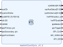

| Name |
Dir |
Width |
Clk |
Description |
| sysClk |
I |
1 |
– |
Control/status register clock from
optional embedded processor system. |
| sysGPIO_OUT |
I |
32 |
sysClk |
Register write data.
Must be valid when sysCsrStrobe is asserted. |
| sysCsrStrobe |
I |
1 |
sysClk | Assert for one cycle to write
sysGPIO_OUT to control register. |
| sysStatus |
O |
32 |
– |
Status register |
| sysAuxStatus |
O |
32 |
– | Auxiliary status register |
| sysHwInterval |
O |
32 |
– | PPS marker status |
| clk125 |
I |
1 |
– | Clock to be synchronized to the
PPS marker. Should be output of MMCM
driven by Marble VCXO. Provides CLKDIV to internal
ISERDES blocks. |
| clk500 |
I |
1 |
– | CLK/CLKB to internal ISERDES blocks. Should be another output of the MMCM providing clk125 and aligned to clk125. |
| ppsPrimary_pin |
I |
1 |
– |
Primary PPS marker.
Connection from FPGA pin through some type of input buffer
(IBUF, IBUFDS, IBUF_IBUFDISABLE). |
| ppsSecondary_pin |
I |
1 |
– | Secondary PPS marker.
Connection from FPGA pin through some type of input
buffer (IBUF, IBUFDS, IBUF_IBUFDISABLE). |
| ppsFromFabric |
I |
1 |
– | PPS marker from FPGA
fabric. Typically this is the output from a
timing system event receiver. |
| hwPPSmarker_a |
O |
1 |
– | Combinatorial copy of currently
selected input PPS marker. |
| ppsPrimary_out |
O |
1 |
– | Combinatorial copy of
ppsPrimary_pin. |
| ppsSecondary_out |
O |
1 |
– | Combinatorial copy of
ppsSecondary_pin. |
| hwPPSvalid |
O |
1 |
clk125 | Asserted when at least one of
the PPS markers is valid. |
| ppsMarker |
O |
1 |
clk125 | PPS output asserted for about 10
µs. Driven by clk125 counter overflow when PLL is
locked otherwise by the currently selected PPS marker
input. |
| ppsToggle |
O |
1 |
clk125 | Toggled at each rising edge of
ppsMarker. |
| SPI_CLK |
O |
1 |
– | Clock to VCXO serial peripheral
interface DACs. |
| SPI_SYNCn | O |
2 |
– | SYNC* to VCXO serial peripheral interface DACs. |
| SPI_SDI | O |
1 |
– | Data to VCXO serial peripheral interface DACs. |
Nets
with names beginning with 'sys' are provided to connect the
module to an optional embedded processor system. Note that
the assorted status outputs have signals in other clock domains
and so need to be read until stable.
| Bit |
Description |
| 31 |
Enable PLL closed-loop
operation. |
| 30 |
Disable PLL closed-loop
operation (Overrides bit 31 if both are set). |
| 29 |
Load DAC selected by
bit 16 with value in bits 15 to 0 when in open-loop mode. |
| 28 |
DAC is driven with data in
offset-binary format. DACs on old Marble hardware
require data in this format. |
| 27 |
DAC is driven with data in
twos-complement format. This is the default. |
| 16 |
Select
DAC to be written. 0/1–Y1(25 MHz VCXO)/Y3(20 MHz
VCXO). |
| 15–0 |
Data
to be written to DAC when PLL is in open-loop mode and bit
29 is asserted. Twos-complement format, regardless
of DAC style. |
| Bit |
Description |
| 31 |
PLL is enabled and locked. |
| 30 |
Toggles state on each DAC update
(open or closed loop). |
| 29 |
Closed-loop PLL operation is
enabled. |
| 28 |
The currently selected PPS
marker input has high jitter.
See auxiliary status register notes for details. |
| 27 |
At least one of the PPS marker
inputs is valid. |
| 26 |
Toggles state on rising edge of currently selected PPS marker input. |
| 25 |
Offset-binary DAC data format
is selected. |
| 24 |
DAC is busy with data update. |
| 23–0 |
Twos-complement value of phase difference, in nanoseconds, between the internal PPS marker and the currently selected PPS marker input. |
| Bit |
Description |
| 31–16 |
Provide estimate of jitter, in units of 1/4 ns per count, between the internal PPS marker and the currently selected PPS marker input. If this value is too large status register bit 28 will be set and the PLL will use a slower loop filter. |
| 15–0 |
Value most recently written to
the DAC. Twos-complement format, regardless of DAC
style. |
| Bit |
Description |
| 31 |
At least one of the PPS marker
inputs is valid (same as status register bit 27). |
| 30 |
Fabric (Tertiary) PPS marker is
valid. |
| 29 |
Secondary hardware PPS marker
is valid. |
| 28 |
Primary hardware PPS marker is
valid. |
| 27 |
Toggles state on rising edge of currently selected PPS marker input (same as status register bit 26). |
| 26–0 |
The number of clk125 cycles between the most recent rising edges of the currently selected PPS marker input. Valid only if bit 31 is set. |